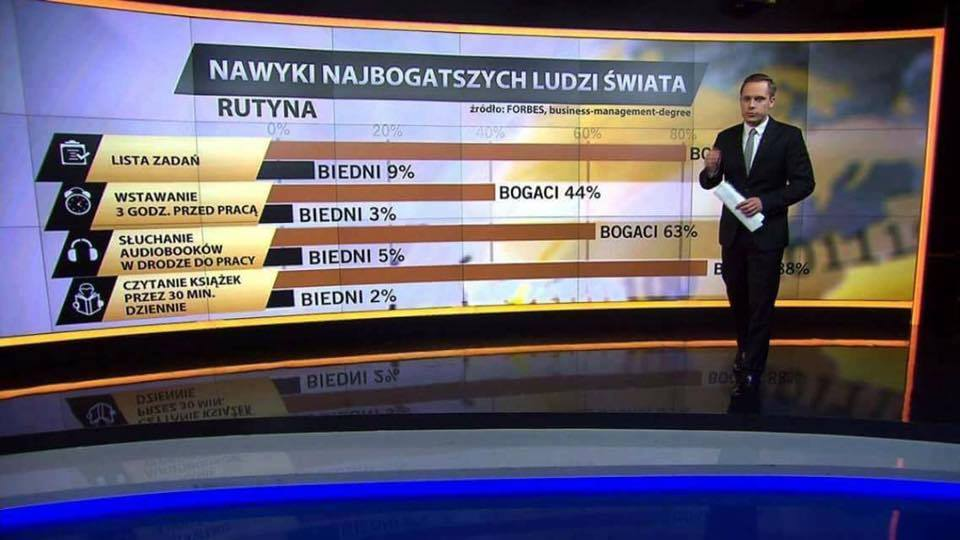

Zmierz się ze swoim kodem
Co oznacza mierzenie kodu?
Pomiar statyczny
Pomiar "dynamiczny"
Statyczna analiza kodu
Co mierzymy?
Zależności pomiędzy elementami (klasy, metody, pakiety, moduły)
Złożność cyklomatyczną
Poziom złożoności kodu
Wyliczany na podstawie grafu
Schematy blokowe (vintage pełną gębą)
Pokrycie testami
Pokrycie testami to zła metryka
Wysokie pokrycie != kod przetestowany
Wysokie pokrycie to fetysz
Jak to zrobić dobrze?
Stosuj TDD
Wtedy wysokie pokrycie będzie skutkiem ubocznym
a nie celem samym w sobie
Przykłady skutków ubocznych
Checkstyle - piszemy kod spójny
Findbug - piszemy kod zgodny ze sztuką
Dokumentacja - piszemy kod według procesu
Jak mierzyć?
Użyć narzędzia
SonarQube
CodeCov
Codeclimate
PMD
Benchmarki
I jak nie zrobić tego całkowicie źle
Co mierzymy?

Werner Heisenberg
Nie wszystko na raz
Wydajność kodu
Pamięciowa?
Czasowa?
Jakaś inna?
Abstrakcyjny cel pomiaru
Pomiar wstępny
Skala tego co mierzymy
Poprawa jakości kodu
Pomiar wobec poprzedniej wersji kodu
Zachowanie specyficzne
Pomiar wobec konkretnych danych
Jak mierzymy?
Ernest Rutherford

Niels Bohr
Jaki jest układ pomiarowy
Jaka jest aparat pomiarowy
Jakie są wady i zalety wybranej metody
Jak określić jakość pomiaru
Niedokładność metody
Błąd pomiaru
Co tu jest źle?
Wszystko
Pojedynczy pomiar
Błąd pomiaru

Ta przeklęta matematyka
Skąd ten 1000?
Maksymalny błąd względny %
3%
Przy rozkładzie normalnym
Ale to załatwi nam narzędzie
JMH
Co to jest?
Narzędzie do tworzenia benchmarków
Co możemy mierzyć?
Wydajność – ilość operacji na sekundę
Średni czas operacji – odwrotność powyższego
Sampling – czas wykonania losowych metod
SingleShot – jedno wywołanie
bez rozgrzewki
Rozgrzewka
czyli walka z JIT
Do czego służy benchmark?
Pozwala zrozumieć model wydajności
JIT
Ma duży wpływ na pomiary
To można „naprawić”
Optymalizacja 2
Rozumieć co robi javac
Błędy
Efekt skupienia
Nie skupiaj się na jedym elemencie
Wojna? Grypa!
Efekt zaprzeczenia
Jeżeli teoria nie zgadza się z danymi
tym gorzej dla danych
Efekt aureoli
Bo piękne jest dobre
Sposób prezentacji danych
Cherry picking
Błąd przeżywalności

Abraham Wald